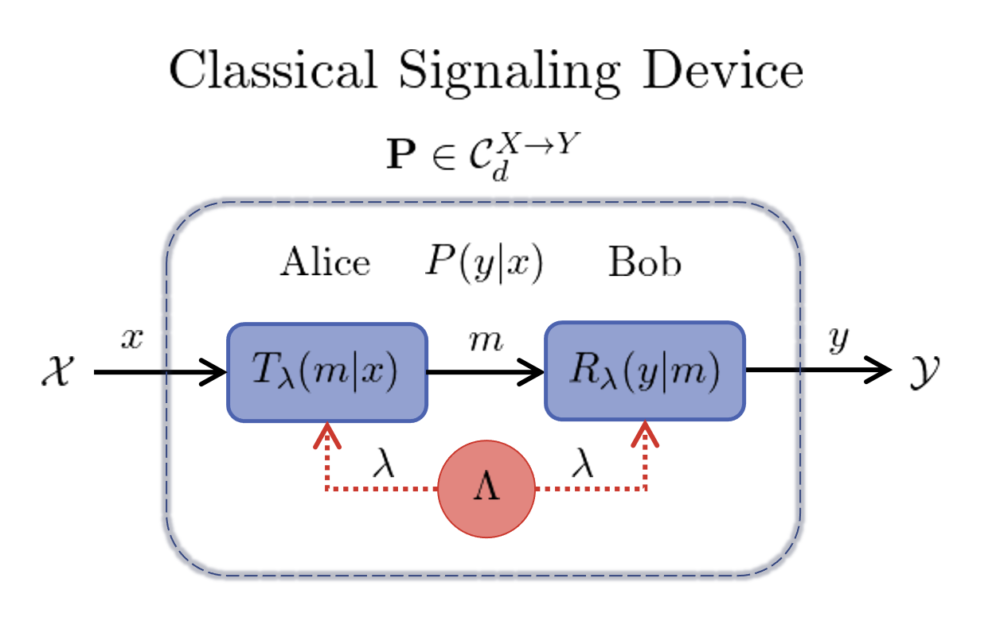
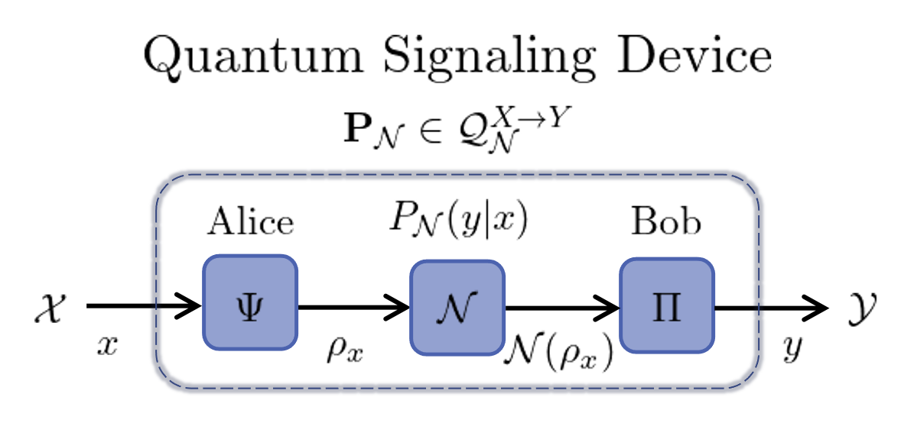

Signaling Correlations
Consider a device that has a classical input $x\in\mathcal{X}=[X]$ and classical output $y\in\mathcal{Y}=[Y]$ where $[N]:=\{1,2,\cdots,N \}$ is a finite set of positive integers. The device is assumed to be causal, i.e. the output set $\mathcal{Y}$ is computed from the input $\mathcal{X}$, however, no assumptions are made about how $\mathcal{Y}$ is computed from $\mathcal{X}$. Hence this device is regarded as a black-box and this description applies to all classical technologies as well as many quantum systems used for computation and communication. Without loss of generality, any such black-box can be described as a signaling device that transmits classical information from Alice to Bob.

The signaling device is effectively a classical channel with $X$ inputs and $Y$ outputs, however, the signaling process that takes $\mathcal{X}\to \mathcal{Y}$ may use non-classical physics e.g. quantum physics. Making no assumptions about the physical system inside the channel, we can characterize its behavior by the conditional probabilities $P(y|x)$. We refer to these probabilities as signaling correlations and organize them into a column stochastic matrix $\mathbf{P}$ where $P(y|x)$ is the element in the $y^{th}$ row and $x^{th}$ column. Hence $\mathbf{P}$ represents a classical channel with $X$ inputs and $Y$ outputs and we denote the set of all such classical channels as $\mathcal{P}^{X\to Y}$.
The information capacity of a channel will typically be limited. In the one-shot setting, we can quantify this value by $d$, the number of distinct classical messages used. In a quantum system $d$ corresponds to the Hilbert space dimension of encoded quantum states. For example, single bit or qubit communication corresponds to $d=2$, while for general $d$ we specify a single dit or qudit of communication.
Code Example: The LocalSignaling Scenario
To model such signaling devices, we apply the framework of BellScenario.jl. The signaling device is then described by the BellScenario.LocalSignaling scenario which specifies the number of inputs X, outputs Y and forward communication d.
using BellScenario
X = 3 # num inputs
Y = 4 # num outputs
d = 2 # bit or qubit signaling
scenario = LocalSignaling(X, Y, d)LocalSignaling(3, 4, 2)
Note that the constructed LocalSignaling type specifies the black-box configuration, but not whether classical or quantum signaling is used.
Classical Channels
In a classical setting, a LocalSignaling scenario decomposes as follows:
- Alice (the transmitter) encodes input $x$ into a single dit message $m\in[d]$.
- Message $m$ is noiselessly sent from Alice to Bob.
- Bob (the receiver) decodes message $m$ to produce output $y$.
To assist in this protocol, Alice and Bob can use shared randomness to coordinate their encoding and decoding maps. This noiseless one-way communication protocol is depicted in the following image.

In the figure, $T_{\lambda}(m|x)$ and $R_{\lambda}(y|m)$ are the conditional probabilities for the transmitter and receiver. In fact, the transmitter and receiver can be represented as classical channels $\mathbf{T}_{\lambda}\in\mathcal{P}^{X \to d}$ and $\mathbf{R}_{\lambda} \in \mathcal{P}^{d \to Y}$. Furthermore, $\Lambda$ denotes the sample space from which shared random variable $\lambda$ is drawn with the probability $q(\lambda)$ where $\sum_{\lambda\in\Lambda} q(\lambda) = 1$. The classical signaling correlations produced in a LocalSignaling scenario decompose as
\[P(y|x) = \sum_{\lambda\in\Lambda}q(\lambda)\mathbf{R}_\lambda\mathbf{T}_\lambda = \sum_{\lambda\in\Lambda}q(\lambda) \sum_{m\in[d]}R_\lambda(y|m)T_\lambda(m|x).\]
Code Example: Classical Signaling Devices
The complete set of classical signaling correlations are denoted $\mathcal{C}_d^{X \to Y}$. Any classical channel $\mathbf{P}$ satisfies $\mathbf{P}\in\mathcal{C}_d^{X \to Y}\subset \mathcal{P}^{X \to Y}$. The set $\mathcal{C}_d^{X \to Y}$ forms a convex polytope regarded as the signaling polytope. More details on the structure of the signaling polytope are found in the Signaling Polytopes section. In the BellScenario.jl framework a classical channel $\mathbf{P}\in\mathcal{P}^{X\to Y}$ is then represented by a BellScenario.AbstractStrategy type where a Strategy is simply a column stochastic map.
Code Example: Classical Signaling without Shared Randomness
using BellScenario
X = 3 # num inputs
Y = 3 # num outputs
d = 2 # dit signaling
scenario = LocalSignaling(X, Y, d)
T = Strategy([1 0 1;0 1 0]) # transmitter channel
R = Strategy([0 0;0 1;1 0]) # receiver channel
P = *(R, T, scenario) # `Strategy` matrix multiplication : P = R*T3×3 Strategy: 0.0 0.0 0.0 0.0 1.0 0.0 1.0 0.0 1.0
Code Example: Classical Signaling with Shared Randomness
using BellScenario
X = 3 # num inputs
Y = 3 # num outputs
d = 2 # dit signaling
scenario = LocalSignaling(X, Y, d)
# λ = 1 strategies
T1 = Strategy([1 0 1;0 1 0]) # transmitter channel 1
R1 = Strategy([0 0;0 1;1 0]) # receiver channel 1
# λ = 2 strategies
T2 = Strategy([0 0.5 1;1 0.5 0]) # transmitter channel 2
R2 = Strategy([1 0;0 1;0 0]) # receiver channel 2
Λ = [0.5, 0.5] # shared random distribution
# `Strategy` matrix multiplication : P = R*T
P1 = *(R1, T1, scenario)
P2 = *(R2, T2, scenario)
# Convex combination of `P1` and `P2`
Strategy(sum( Λ .* [P1, P2] ), scenario)3×3 Strategy: 0.0 0.25 0.5 0.5 0.75 0.0 0.5 0.0 0.5
Quantum Channels
In a quantum setting a LocalSignaling scenario decomposes as follows:
- Alice uses a classical-quantum encoder $\Psi$ to transform input $x$ into a quantum state $\rho_x$.
- Alice sends $\rho_x$ to Bob through a quantum channel $\mathcal{N}$.
- Bob measures $\mathcal{N}(\rho_x)$ with a positive operator-valued measure (POVM) $\Pi = \{\Pi_y\}_{y\in\mathcal{Y}}$ produce output $y$.
The amount of quantum communication is measured by the Hilbert space dimension of $\rho_x$. Additionally, the quantum channel $\mathcal{N}$ performs a completely positive trace-preserving (CPTP) map on the density matrix of $\rho_x$ producing a new quantum states $\mathcal{N}(\rho_x)$. This quantum communication scheme is depicted in the following figure.

Note that the inputs and outputs are classical, hence, we discuss the classical channel $\mathbf{P}_{\mathcal{N}}$ generated using quantum channel $\mathcal{N}$. The signaling correlations of a quantum signaling device are then expressed
\[P_{\mathcal{N}}(y|x) = \text{Tr}[\Pi_y \mathcal{N}(\rho_x)],\]
for a given set of quantum states $\{\rho_x\}_{x\in\mathcal{X}}$ and POVM $\{\Pi_y\}_{y\in\mathcal{Y}}$. The set of quantum channels generated for any choice of states and POVM is denoted $\mathcal{Q}_{\mathcal{N}}^{X \to Y}$ where $\mathbf{P}_{\mathcal{N}} \in\mathcal{Q}_{\mathcal{N}}^{X \to Y}\subset \mathcal{P}^{X \to Y}$. For example, a noiseless quantum channel $\mathcal{N}=\text{id}_d$ where $\text{id}_d$ is the $d \times d$ identity matrix, the signaling correlations are constructed as
\[P_{\text{id}_d}(y|x) = \text{Tr}[\Pi_y \rho_x],\]
while the set of all noiseless channels is denoted $\mathcal{Q}_d^{X \to Y}$.
Code Example: Signaling Over a Quantum Channel
To numerically construct quantum signaling correlations, BellScenario.jl provides a quantum_strategy method. As input this method requires states and POVMs to be represented by QBase.States.AbstractDensityMatrix and QBase.Observables.AbstractPOVM as defined in the QBase.jl package.
using BellScenario
using QBase
X = 3 # num inputs
Y = 3 # num outputs
d = 2 # qudit signaling
scenario = LocalSignaling(X, Y, d)
Ψ = States.trine_qubits # trine qubit states
Π = Observables.trine_qubit_povm # trine qubit povm
println("Π = ", Π, "\n")
# quantum signaling correlations for an ideal channel
P = quantum_strategy(Π, Ψ, scenario)
# quantum signaling correlations for a depolarizing channel
μ = 0.5 # depolarization amount 0 ≤ μ ≤ 1
P_N = quantum_strategy(Π, Channels.depolarizing.(Ψ, μ), scenario)Ψ = QBase.States.Qubit[[1.0 + 0.0im 0.0 + 0.0im; 0.0 + 0.0im 0.0 + 0.0im], [0.25 + 0.0im 0.4330127018922193 + 0.0im; 0.4330127018922193 + 0.0im 0.7499999999999999 + 0.0im], [0.25 + 0.0im -0.4330127018922193 - 0.0im; -0.4330127018922193 + 0.0im 0.7499999999999999 + 0.0im]]
Π = Array{Complex{Float64},2}[[0.6666666666666666 + 0.0im 0.0 + 0.0im; 0.0 + 0.0im 0.0 + 0.0im], [0.16666666666666666 + 0.0im 0.28867513459481287 + 0.0im; 0.28867513459481287 + 0.0im 0.4999999999999999 + 0.0im], [0.16666666666666666 + 0.0im -0.28867513459481287 - 0.0im; -0.28867513459481287 + 0.0im 0.4999999999999999 + 0.0im]]
P = [0.6666666666666666 0.16666666666666666 0.16666666666666666; 0.16666666666666666 0.6666666666666665 0.16666666666666657; 0.16666666666666666 0.16666666666666657 0.6666666666666665]
P_N = [0.5 0.25 0.25; 0.24999999999999997 0.49999999999999994 0.24999999999999994; 0.24999999999999997 0.24999999999999994 0.49999999999999994]